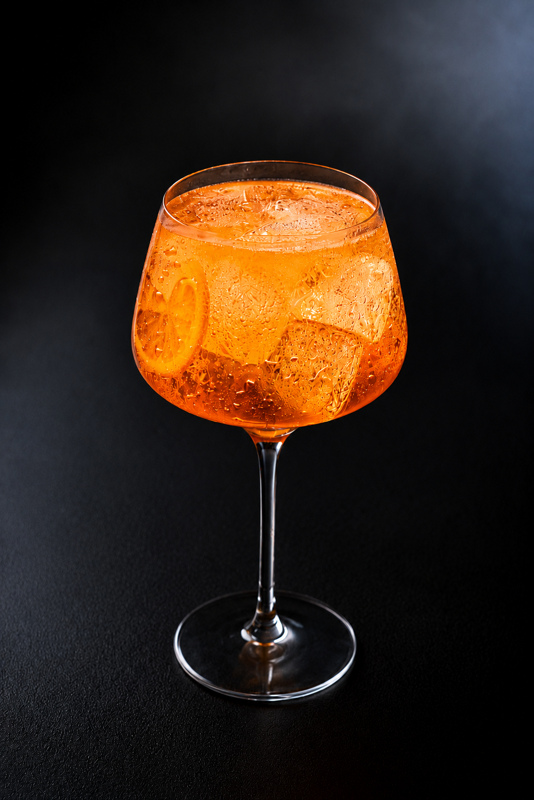
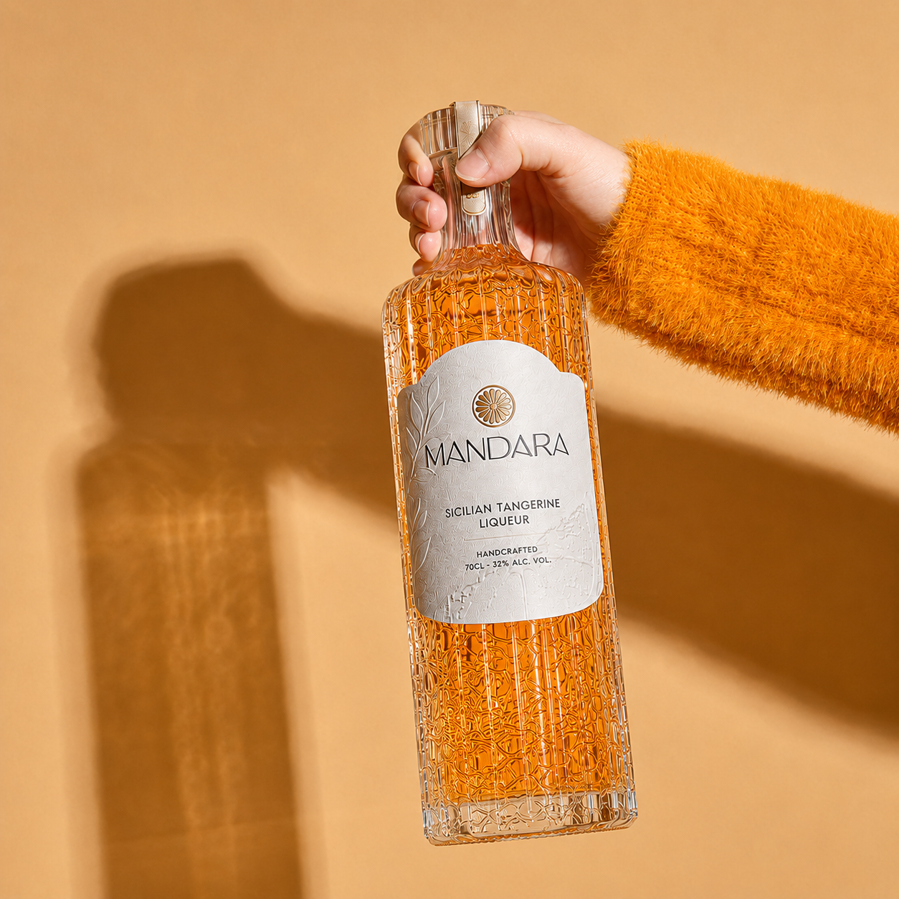
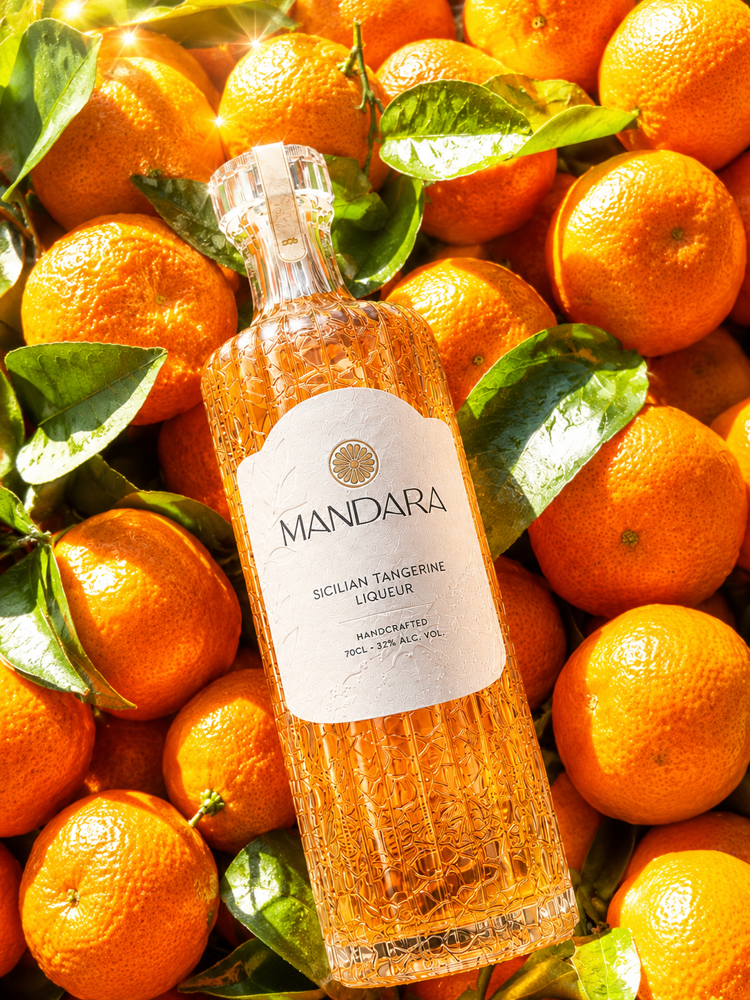
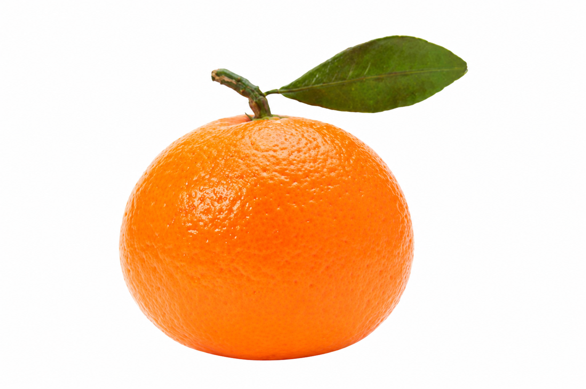

Tardivo Spritz
- 60 ml Mandara
- 90 ml Dry Prosecco
- 30 ml Soda
Build over ice in a balloon glass. Stir twice. Express the peel and drape it across the rim.

There is a moment, at the end of a good evening, when conversation slows and no one reaches for their glass in a hurry. The candles have burned down. The table is warm with what was shared.
This is where Mandara belongs.
Poured cool, held in the hand, it opens gradually — first the peel, resinous and bright, then something deeper underneath. A quiet sweetness. A long finish that doesn't ask for attention but keeps it.
It is not dramatic. It was never meant to be.
Mandara was built for the unhurried. For those who understand that the finest things rarely announce themselves — they simply remain, long after everything else has gone.

On the lower slopes of Etna, where volcanic soil runs dark and the air carries ash and citrus in equal measure, lies Valcura — a village small enough to be forgotten, old enough not to care.
The Ferrante family has lived here for generations. They kept their groves, tended their trees, and observed the mountain's slow rhythm with the patience of people who understand that the land does not negotiate.
At some point — no one marks the exact year — the decision was made to keep something back. To take what the Tardivo di Ciaculli had always offered and do something more deliberate with it. Not to reinvent the fruit. To honour it.
Mandara was born from that decision. Not from ambition. From attention.
The bottles have been filled this way since 1948.
From a slow corner of Sicilyinto the long quiet of your evening.

Not all tangerines are the same. Not even in Sicily.
The Tardivo di Ciaculli ripens late — long after the other citrus has been picked and forgotten. It takes its time through the cold months, deepening in the skin, concentrating what the Sicilian sun spent all year building. By January, when the groves are quiet and the light is low and golden, the fruit is finally ready.
It is small. Imperfect in shape. Intensely fragrant.
The peel carries layers that most citrus never develops — resinous, slightly bittersweet, with a warmth underneath that lingers. It is not the bright, immediate citrus of summer. It is something slower. More considered.
This is the only tangerine Mandara has ever used. Not because it is the most practical choice — it isn't. But because it is the most honest one.